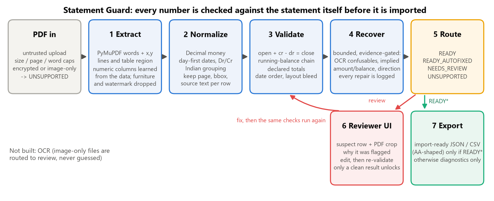
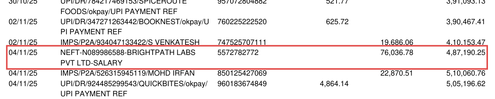
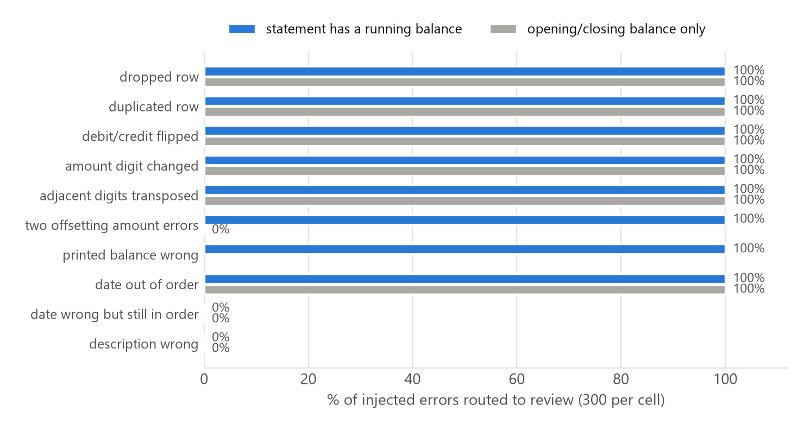
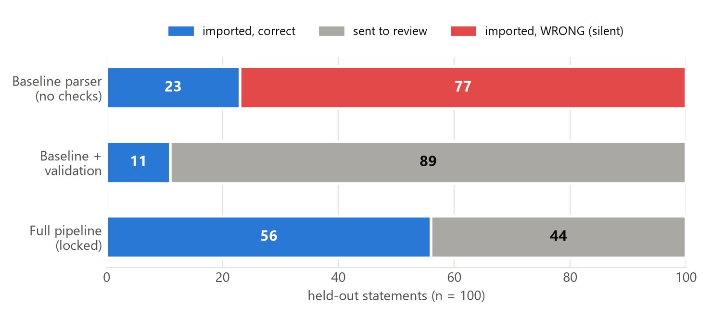
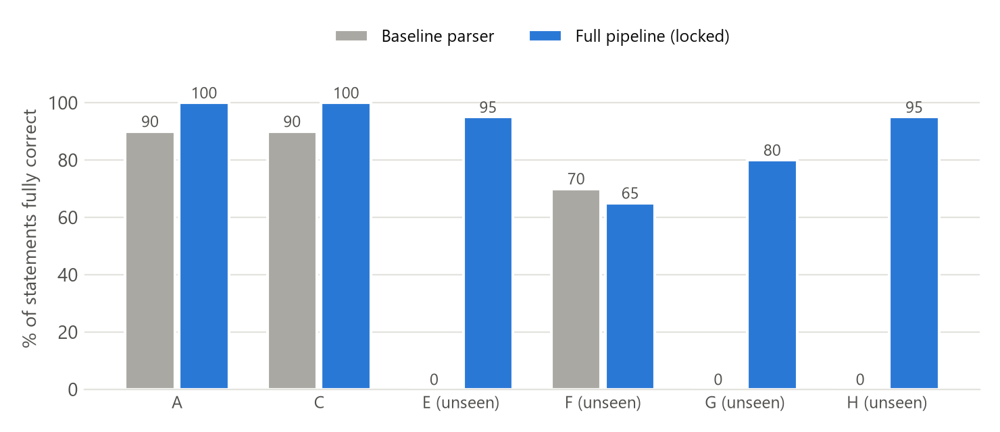

A bank statement should check itself before it is allowed to touch a family's net worth.
WealthNest shows family-level net worth and insights from statements and accounts a family brings in. The case brief says statements arrive as PDFs in dozens of layouts.
If a parser drops a row, flips a debit, or mixes a page footer into a balance, who finds out, and when?
A statement is unusually well suited to checking itself: opening + credits − debits = closing and, usually, every row prints a running balance.
So: measure the extraction against the statement's own arithmetic, stop what does not add up, and show a reviewer the exact row and why.
Not claimed: how the live WealthNest importer behaves. The "baseline" later in this deck is our own reproduction of a straightforward parser.
STORE LISTING Public App Store text, not an in-app observation: "Link your accounts securely, or import your CAS"; "upload the PDF [PPF, NPS, Sukanya, post-office statements]; password-protected ones work too"; "Statement import shows clearer status messages."
Slots stay empty until filled from a real 30-minute walkthrough with synthetic files. Nothing in this deck claims how the live app behaves. Internal behaviour will be labelled as hypothesis.
Provisional choice, justified from the brief; to be revisited if the app audit points elsewhere.
opening & closing balance · per row: date, description, debit, credit, running balance · with exact Decimal money, and the page, box and source text kept for review.
Indian digit grouping · wrapped narrations · repeated page headers/footers · debit/credit as columns, Dr/Cr suffix or indicator · blank repeated dates · carry-forward rows · watermarks · overdraft · OCR-damaged text layers · no-running-balance layouts
Image-only scans: no OCR was built. They are routed to review as UNSUPPORTED, never guessed.
Also out: encrypted or >15 MB / >40-page files, multi-account PDFs, MF/demat statements, real bank layouts (all layouts here are invented).

Deterministic geometry, no model. Columns are learned from where the numbers sit, so header alignment does not matter, and unfamiliar header names fall back to structure instead of failing.
Recovery is evidence-gated. A repair must be confirmed by the printed balances on both sides, and is logged. A clean-text amount that disagrees is never overridden.
Unresolved never means ready. A reviewer edit re-runs the same checks; only a clean result unlocks import.

Crop of the source PDF; red box drawn by the review screen. Row 4: printed credit 76,036.78, but the printed balance moved from 4,10,153.47 to 4,87,190.25, i.e. 77,036.78.
Row 4: balance moved by 77,036.78 but this row accounts for 76,036.78 (unexplained 1,000.00).
Whole statement: opening + credits − debits ≠ closing (off by 1,000.00).
Baseline parser: status READY. Imports all 41 rows, nothing flagged.
Review flow: the reviewer corrects the row from the source, Re-validate re-runs the same checks, status becomes READY (human-reviewed) and the edit is logged.

Errors injected directly into extracted records, 300 per cell, no PDFs: this isolates what the checks can see from what the parser gets wrong.
Statements that print neither opening nor closing balance are never marked ready: the first row cannot be verified. This costs false alarms (next slides).
| Design choice | What we did |
|---|---|
| Ground truth | Ledger built in exact Decimal by the generator, before rendering with a different library than the parser |
| Dev set | 56 PDFs, 4 layouts (A–D), used to build the parser |
| Held-out set | 100 PDFs, 3,931 rows: 4 layouts never seen (E–H) + fresh seeds of 2 dev layouts |
| Categories | clean · watermark · blank dates · very wide amounts · overdraft · OCR-damaged text · source row missing / duplicated / amount altered · image-only |
| Lock | Fixture truth + pipeline source hashed in bench/LOCK.json before the holdout run; later changes are listed there |
Problem document = wrong extraction, or defective source, or unreadable. Metrics report denominators and Wilson 95% intervals.

Outcome of each arm on the same 100 statements. "WRONG" = a financial field wrong, or a defective source imported.
| Baseline | Full (locked) | |
|---|---|---|
| Fully correct | 32/100 | 87/100 |
| Date / amount / balance exact | 69 / 52 / 85% | 95 / 94 / 96% |
| Problem docs flagged | 0/77 | 28/28 (CI 88–100) |
| Imported while wrong | 77 | 0 |
| Review rate | 0% | 44% |
| Straight-through & correct | 23 | 56 |
| Median time per PDF | 23 ms | 36 ms |
Detection alone (arm 2) also catches 77/77, but sends 89% of statements to a human. Extraction improvements are what make that affordable.

Statements fully correct by layout (A, C seen in dev; E–H unseen). On layout F the locked pipeline was worse than the baseline (13 vs 14 of 20).
After an end-to-end code review (fail-safe on corrupt PDFs, CSV-injection guard, two full_fixed parser fixes) the benchmark was re-run: 0 differences across 780 case-and-arm results. The two parser fixes are covered by unit tests because the locked benchmark contains no such cases.
Benchmark review rates (41–44%) are on a deliberately hard synthetic mix; the real mix is unknown.
pip install -r requirements.txt python -m pytest -q # 63 tests python -m bench.make_fixtures --check # fixtures match the lock python -m bench.run_eval --split holdout # all arms python -m bench.injection_eval # validator-only benchmark python -m bench.report # tables from the run streamlit run app/streamlit_app.py # demo and review flow python -m statement_guard.cli fixtures/samples/2_amount_mismatch_caught.pdf
Repository: github.com/Amaan-Khan-09/WealthNest (public) · CI: GitHub Actions passed on commit a36d0ca (61 tests + fixture-lock check) · Demo script and Q&A prep are in submission/.